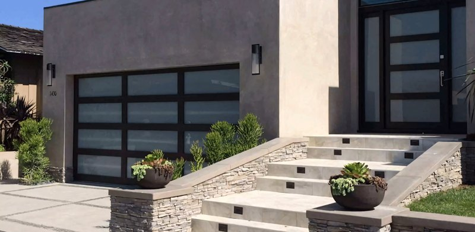

Overhead doors that read as solid wood
Sectional doors built as wood, not wrapped in it: modern plank, Mediterranean arch, craftsman lites, barn X-brace. Every one sized to its opening and finished before it ships.
- Styles
- Modern, Mediterranean, craftsman, barn
- Glass
- Any pattern
- Sets
- Gates and entry to match

Why ours. A sectional door takes the most abuse of anything on the house.
A garage door is a third of the street face of most houses, and it moves twice a day. We build the sections with real stiles and rails and face them in the wood you choose, so the door looks like one piece from the kerb and runs true for years.
Modern: horizontal plank, hidden joints, stainless inlays. Mediterranean: arches, dark stains, iron. Craftsman: painted rail-and-stile with a band of divided lites. Barn: X-braces, clavos, strap hinges. All built in the same shop.
Full-length glass rows, awning windows that open, matching pedestrian gates and entry doors: ask.